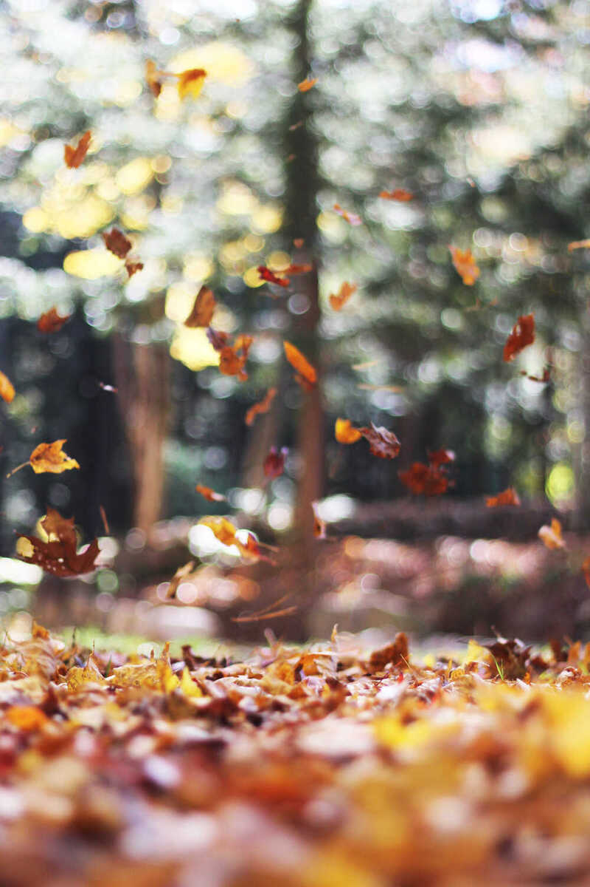
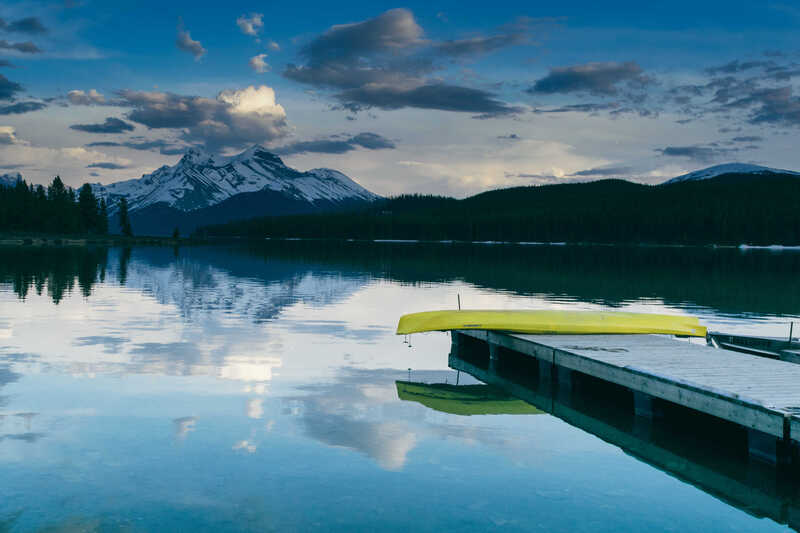

Skip to content
Skip to content
Gallery
A place for photographs, small observations, and the life surrounding the work. The final archive can later be arranged by year with capture dates and notes.
Undated studies
These twelve existing site images are layout placeholders, not a dated personal archive. Dates, locations, and story captions are intentionally omitted until verified source metadata is supplied.



